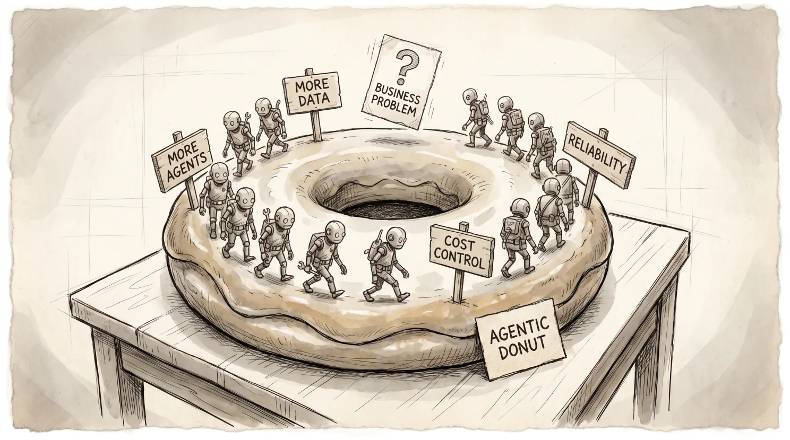

After visiting yet another vendor conference, it has become obvious that two unhelpful patterns are proliferating in the AI ecosystem. They have not been given proper names. This column is dedicated to fixing that.
Pattern 1: The AgentHouse
Anyone who survived the Big Data wave will recognize the shape of this. Data is messy, so build a warehouse. The warehouse does not scale, so build a data lake. The lake is unreadable, so add Bronze and Silver and Gold layers until the whole thing becomes a swamp. The swamp is too slow, so build a warehouse on top of the lake and call it a Lakehouse. Meanwhile most actual consumption happens through datamarts, versioned flat files extracted straight to dashboards, bypassing the entire stack.
Now run the same cycle with agents. Too many dashboards, so build an agent to go to the raw data. The raw data is incompatible, so add a semantic layer. The agents need prompts, so build a prompt database. The agents multiply, so build a registry. The registry is unsearchable, so build a query layer on top. The agents cost money, so build monitoring dashboards. The monitoring dashboards proliferate.
Pattern 2: The Agentic Donut
The second pattern is a loop rather than a tower. Agents need more data and context to work well, so expand the data access. They are fragile, so add reliability and security layers. They are expensive, so add cost governance. Costs come down, so build more agents, which need more data and context to work well. Round and round.
What is missing from the center is the question that should have been asked before any of it started: why are these agents being built? Not technically. Not architecturally. What business problem justifies their existence? That question never enters the loop. The loop does not have a place for it.
Hence the donut.

Why both patterns keep happening
The root cause is the same misattributed Kelvin quote that started the data warehouse era: what is not measured cannot be improved. Businesses measured everything.
The problem is that measurement does not imply prediction, prediction does not imply improvement, and even successful improvement carries an opportunity cost the measurement apparatus never accounts for.
So the pipeline takes on a life of its own. Nobody asked whether the data had anything useful to say. The question was always how to store it, clean it, serve it, and now how to put an agent in front of it.
The bottleneck was rarely access alone. It was ownership, a human deciding what a metric means and being accountable for that decision. Anthropic's own data team found this when they tried bootstrapping a semantic layer by having an LLM auto-generate metric definitions from raw tables and query logs. It produced plausible-looking definitions that encoded the very ambiguities they were trying to eliminate, net negative against a smaller, human-curated layer. They also gave the agent access to thousands of prior SQL queries from every dashboard and notebook in the corpus. Accuracy moved less than a point. The agent could see all the prior work. It still could not use it.
That human is expensive. The definition cannot be generated, purchased, or automated into existence.
Which means the correct response to the AgentHouse is not a better architecture. It is a more targeted scope. The person who owns the definition needs to understand the business process well enough to know what the metric is actually measuring, not just which table it lives in. That expertise is finite, domain-specific, and non-transferable. You cannot spread it across an entire warehouse and expect it to hold.
But even a correct input does not fix the output, which is where both patterns reveal why the ROI rarely materializes.
Reliable numbers are not decisions. Acting on an agent's output requires a working model of the business process the data describes, clear authority over the decision being made, and an organizational structure capable of executing before the signal decays.
Many organizations have none of these cleanly. The agent generates an alert with no designated owner, crossing functional lines that nobody has authority to adjudicate, on a cadence the planning process was not designed to absorb.
Moreover, successful intervention creates a structural break. The distribution you measured, the elasticity you estimated, the correlation between your OKR and the outcome it was supposed to track: these are properties of the system before you touched it. After the intervention you are operating a different system with the same instrumentation. The semantic layer will not tell you this. The monitoring dashboard will not tell you this. This is not Goodhart's Law, which says a metric stops being useful once it becomes a target.
This is more fundamental: correct measurement, correctly acted upon, changes what you are measuring. The model goes stale because you used it.
What to do instead
Collect raw data. It is the cheap part. But before writing one prompt for an agent, ask what problem you are solving, what business process you are targeting, what data actually represents that process, and who has the authority to act on the answer. Then ask whether the organizational structure exists to execute before the signal becomes irrelevant. Then ask whether you are willing to invest in a human who owns the definitions, not just the infrastructure that serves them.
No semantic layer generates that. No agent registry surfaces it. And no monitoring dashboard will tell you that its own outputs have stopped predicting outcomes you care about because you already acted on the last one.
It is somewhat ironic that the move from Business Intelligence to Artificial Intelligence dropped the word business, and yet both tools would benefit from an even stronger link to it.
For more insights, I strongly suggest Frictionless Decisions, a newsletter by my former colleague: https://zanehall.substack.com/p/ai-governance-for-bi-platforms